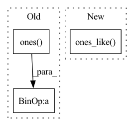

Pattern ID :12169

Before Change
level_high = level_high.to(y_zero_point.device)
y_zero_point = min(max(level_low, (y_zero_point.to(torch.int8))), level_high)
else:
level_low = torch.ones([1]).to(torch.uint8) * level_low
level_high = torch.ones([1]).to(torch.uint8) * level_high
level_low = level_low.to(y_zero_point.device)
level_high = level_high.to(y_zero_point.device)
After Change
type_ = torch.int8 if level_low < 0 else torch.uint8
level_low *= torch.ones_like(y_zero_point).to(type_)
level_high *= torch.ones_like(y_zero_point).to(type_)
level_low = level_low.to(y_zero_point.device)
level_high = level_high.to(y_zero_point.device)
y_zero_point = torch.min(torch.max(level_low, y_zero_point.to(type_)), level_high)
In pattern: SUPERPATTERN
Frequency: 3
Non-data size: 3
Instances
Fragment ID: 41112795
Project Name: openvinotoolkit/nncf
Commit Name: 23610df53be6cb3c36a8f5ec6aaf7ab8f4fc757e
Time: 2020-11-06
Author: aleksei.kashapov@intel.com
File Name: nncf/quantization/quantize_functions.py
M Class Name: AnonimousClass
N Class Name: AnonimousClass
M Method Name: get_scale_zp_from_input_low_input_high(4)
N Method Name: get_scale_zp_from_input_low_input_high(4)
M Parent Class:
N Parent Class:
M File Name: nncf/quantization/quantize_functions.py
N File Name: nncf/quantization/quantize_functions.py
M Start Line: 154
M End Line: 169
N Start Line: 153
N End Line: 164
'>
Before Change
def reprojection_error(self, objPts_w, imgPts, Rt):
P = np.matmul(self.camMat[:, :3], Rt)
objPts_w_ex = np.concatenate((objPts_w.reshape((self.n, 3)), np.array([np.ones((self.n))]).T), axis=1)
imgRep = np.matmul(P, objPts_w_ex.T).T
imgRep[:, 0] = imgRep[:, 0] / imgRep[:, 2]
imgRep[:, 1] = imgRep[:, 1] / imgRep[:, 2]
error = np.sqrt((imgPts[:, 0] - imgRep[:, 0].reshape((self.n, 1))) ** 2 + (
imgPts[:, 1] - imgRep[:, 1].reshape((self.n, 1))) ** 2)
error = np.sum(error, axis=0) / self.n
After Change
P = torch.bmm(camMat[:, :, :3], Rt)
// concat 1 to the last column of objPts_w
objPts_w_ex = torch.cat((objPts_w, torch.ones_like(objPts_w[:, :, :1])), dim=-1)
// Calculate the image points
imgRep = torch.bmm(P, objPts_w_ex.transpose(dim0=-1, dim1=-2)).transpose(dim0=-1, dim1=-2)
'>
Fragment ID: 41112803
Project Name: pypose/pypose
Commit Name: f93c59c3ad352fe90aa3072311a7ca67fa442243
Time: 2023-02-25
Author: zitongz3@illinois.edu
File Name: pypose/module/pnp.py
M Class Name: EPnP
N Class Name: EPnP
M Method Name: reprojection_error(5)
N Method Name: reprojection_error(4)
M Parent Class:
N Parent Class:
M File Name: pypose/module/pnp.py
N File Name: pypose/module/pnp.py
M Start Line: 456
M End Line: 466
N Start Line: 469
N End Line: 492
'>
Before Change
mask = Masks.get_ff_mask(height, width)
mask_all.append(mask)
mask = torch.from_numpy(np.asarray(mask_all)).unsqueeze(1).float()
ones = torch.ones(x.size(0), 1, x.size(2), x.size(3))
mask = ones * mask
if x.is_cuda:
mask = mask.cuda()
result = x * (1. - mask)
After Change
def mask_image(x, config):
height, width, _ = config["image_shape"]
mask = torch.ones_like(x)
temp = torch.ones_like(x)
for i in range(x.size(0)):
mask_temp = Masks.get_ff_mask(height, width)
mask[i,:,:,:] = temp[i,:,:,:] * mask_temp
'>
Fragment ID: 41112798
Project Name: sayednadim/global-and-local-attention-based-free-form-image-inpainting
Commit Name: f42c7e888ac77a88b8ece8c9bf9adabba796d7ca
Time: 2020-08-05
Author: smnadimuddin@gmail.com
File Name: model/mask.py
M Class Name: AnonimousClass
N Class Name: AnonimousClass
M Method Name: mask_image(2)
N Method Name: mask_image(2)
M Parent Class:
N Parent Class:
M File Name: model/mask.py
N File Name: model/mask.py
M Start Line: 40
M End Line: 46
N Start Line: 40
N End Line: 44